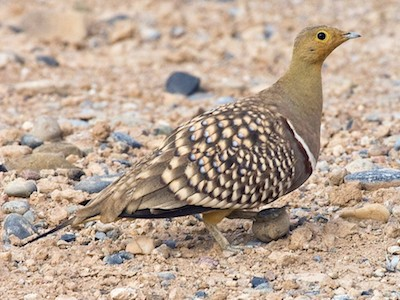
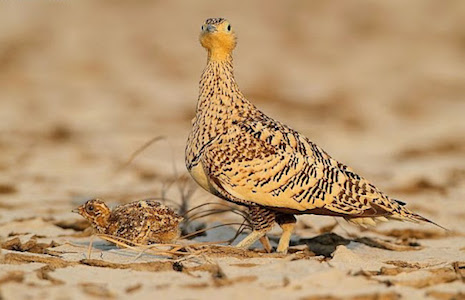

Wow! Based on your answers... You share similarities with the Namaqua Sandgrouse (Pterocles namaqua)

Namaqua Sandgrouses are very nurturing and peaceful birds that you would find in the desert. Outside of breeding season, Sandgrouses are gregarious and tend to spend the night in groups, congregating an hour before dusk. These bird are not territorial, but are very protective of their offspring and take great care of their offspring despite the challenges the desert presents. Male Sandgrouses actually get water to their young by carrying it in their feathers. Thanks to coiled hairlike extensions on the feathers of the underparts, a sandgrouse can soak up and transport about two tablespoons of liquid. Like the Namaqua Sandgrouse, you are an extremely kind, gentle and resourceful person that prefers warm weather to cold weather.
Want to learn more about this species? Click the Feather!

Click on Ceasar to Restart!